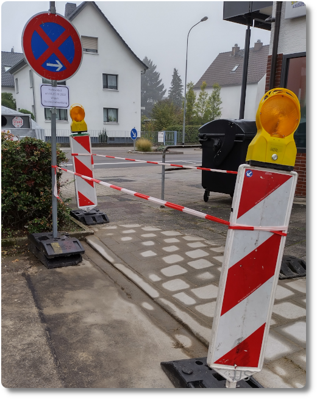
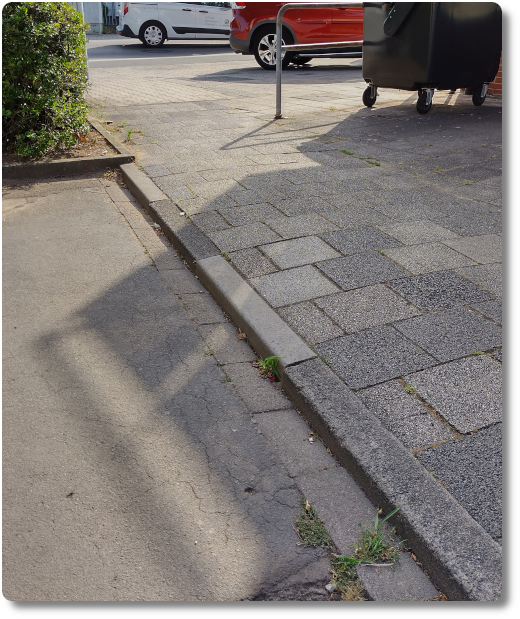
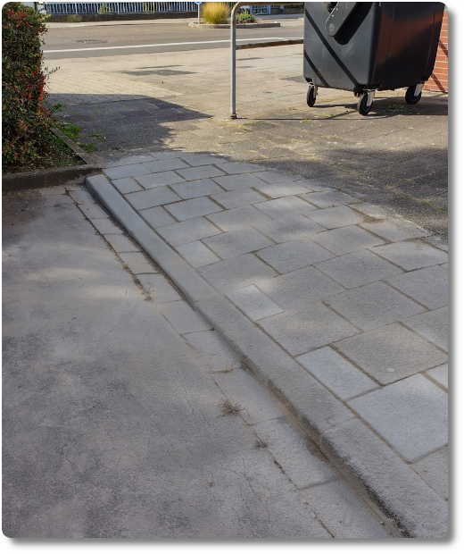
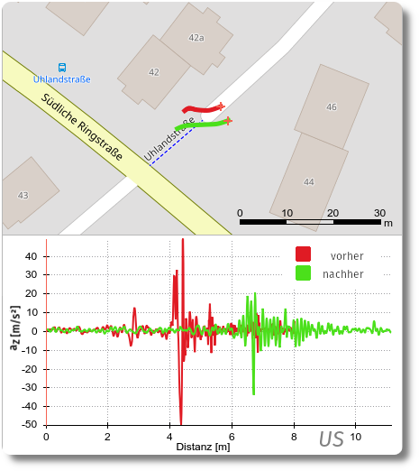

Ebene(re) Radwege - objektiv vermessen
In der Nähe unserer Wohnung gab es bis vor kurzem eine Fußgängerverbindung zweier Straßen, die für Rollstuhl- oder Radfahrer unkomfortabel zu überqueren war. Irgendwann ist auch mir das aufgefallen, und ich habe über den Bürgermelder unserer Stadt eine Nachricht dazu hinterlassen. Freude, oh Freude: ein paar Monate später fand an dieser Stelle tatsächlich der Umbau statt.
Die Bordsteinkante sollte also abgesenkt werden, damit das Queren dieses Bereichs besser möglich ist. So sah die Bordsteinkante vorher aus:
... und so nachher:
Wer sich jetzt fragt, ob das nur hinausgeschmissenes Geld war, oder es doch etwas gebracht hat, dem kann ich versichern: Der Umbau hat sich gelohnt! Dies zeigt der Vergleich zweier Messungen der Erschütterung mit Hilfe des Smartphones, befestigt am Lenker meines Fahrrades während der Fahrt über diese Stelle.
In der Karte oben erkennt man mittig zwei Pfade. Das sind die Wege, die ich mit meinem Fahrrad über die Bordsteinkante bei eingeschaltetem GPS zurückgelegt habe, und zwar vor (rot) und nach (grün) dem Umbau. Im Diagramm unten ist die dabei gemessene Beschleunigung az abgetragen. z steht hier für die vertikale Raumrichtung, also senkrecht zur Straße. Sind die Absolutwerte groß, so gibt es eine entsprechend starke Beschleunigung des Smartphones nach oben bzw. unten.
Wie man eindeutig sehen kann, haben sich der Erschütterungen stark verringert. Das Fahrgefühl ist viel viel besser geworden und man kann jetzt auch mit kleinerem Raddurchmesser diese Stelle bequem überqueren.
Vielen Dank an dieser Stelle nochmal an die beiden Mitarbeiter der kommunalen Betriebe Langen, die diesen Umbau durchgeführt haben, und auch an den/die Mitarbeiter*in, welche(r) den Umbau in Auftrag gegeben hat.
PS: Zur Messung der Radwegqualität mit dem Smartphones wird demnächst ein Artikel in Ausgabe 35 der Zeitschrift Fahrradzukunft erscheinen, in dem ich auch den neu gebauten Radschnellweg FRM1 zwischen Langen und Egelsbach genauer untersucht habe. In dem Artikel wird der technischen Schnickschnack etwas genauer erläutert. Aber wer vielleicht einfach selber messen will, der findet die notwendige Software für die Datenauswertung in meinem GitHub-Repository radweganalyse. Hardwareseitig benötigt man nur ein Smartphone und ein Fahrrad.